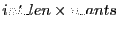
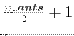

| Parameter | Variable | Description |
|---|---|---|
| Number of antennas | n_ants | Number of antennas to process. |
| Bit width of samples in | n_bits | Bit width of each input sample number. Usually set to 4, resulting in 16 bit input numbers (2 polarizations, complex numbers). |
| Accumulation length | acc_len | Specified per antenna. |
| Adder latency | add_latency | Used to set the latency of internal adders. |
| Multiplier latency | mult_latency | Used to set the latency of internal multipliers. |
| BRAM latency | bram_latency | Used to set the latency of internal BRAMs. |
| Implementation: Multiplier type | use_ded_mult | Select the type of multipliers to use. Can be a single number or array - see below. |
| Implementation: Delay type | use_bram_delay | Selects the type of delays to implement. Single number configures all internal taps. |
| Port | Dir. | Data Type | Description |
|---|---|---|---|
| ant | in | variable width. see below. | Input port for incoming antenna data. |
| sync_in | in | boolean | Synchronization pulse. New window begins clock cycle after sync received. |
| window_valid | in | boolean | Indicates incoming antenna data is valid. Must remain constant for acc_len*n_ants. |
| acc | out | variable width. see below. | Output data. |
| valid | out | boolean | Indicates data on acc is valid. |
| sync_out | out | boolean | Passthrough for sync pulses. |
The internals of the block are reset with the reception of a sync pulse. A new window begins on the very next clock cycle. Each window is  clock cycles long. The data for each antenna is input for acc_len clock cycles.
For example, for n_bits of 4 and acc_len of 2, the input to the X-engine would be 16 bits every clock cycle mapped as follows:
The window_valid line is expected to remain constant for the duration of each window. If it is high, the output is considered valid and captured into the output FIFO buffer. With the close of that window, the output will be presented to the user as valid data on every second clock pulse. If window_valid was held low, the data is ignored.
With the close of one window, anther begins directly afterwards. Data can thus be streamed in and out continuously, while a sync pulse will force the start of a new window.
Generally, the output of the X-engine configured for N antennas can be mapped into a table with
 columns and  rows as follows:
rows as follows:
As an example, consider the output for a 4 antenna system (with antennas numbered A through D):
Thanks to the inclusion of the x_engine_mask block, X-engine output duplicates (observed in rows 5 and 6 of Table 1.4) are automatically removed. The output of a 4 antenna windowed X-engine is thus AA, AB, BB, AC, BC, CC, BD, CD, DD, DA.